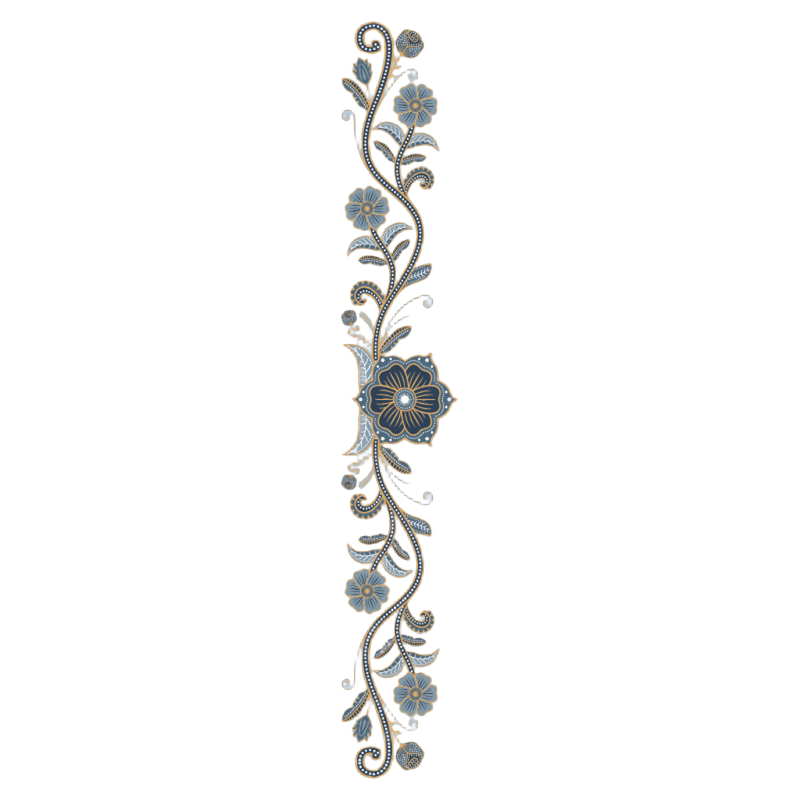
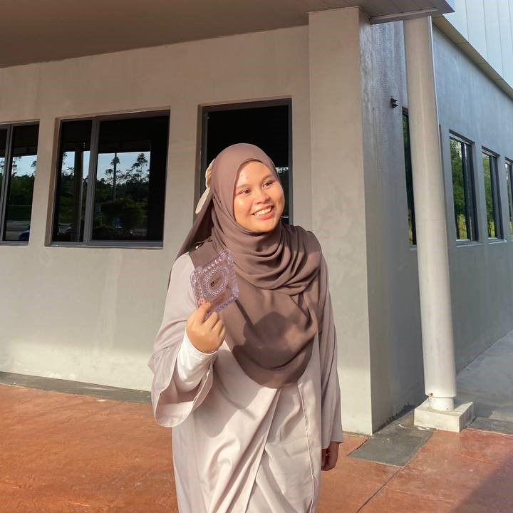

Home
About Me
Education
Hobby
Contact Me
|
Home |
About Me |
Education |
Hobby |
Contact Me |
 |
Hi there :PI'm Nur Aisyah binti Rosli, most people know me as Aisyah. Born on 10'th February 2004 at 10:02 in the morning at Hospital Tanjong Karang, Kuala Selangor. I'm the eldest among my 4 siblings. |  |
|  | ||
|
Who Am II would describe my self as a mix of an introvert with the bigges curious streak. I cherish creativity and curiosity. I believe these qualities fuel my passion for exploring more. |
|
|
||
|
What I Love the mostMy life revolves around the things that light up my heart:
|